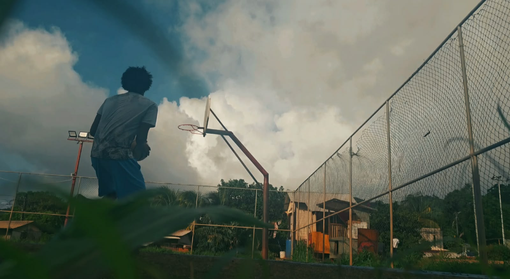
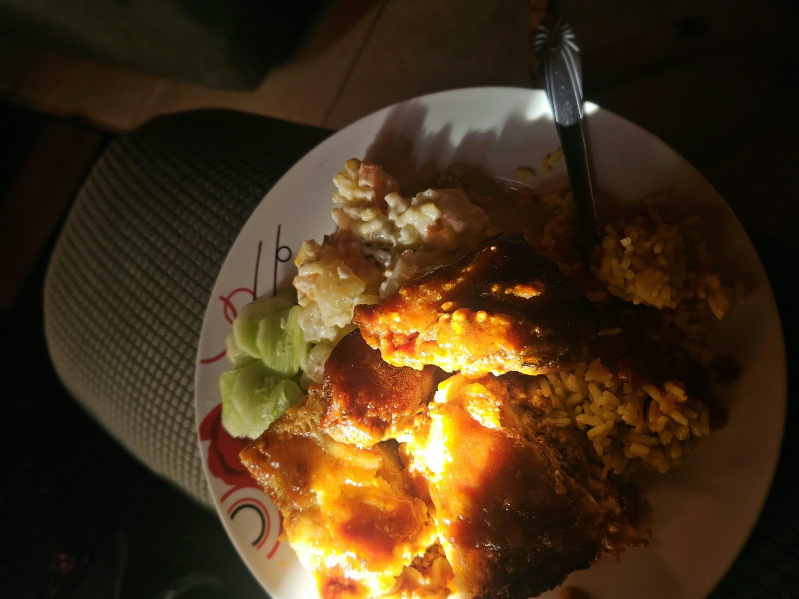
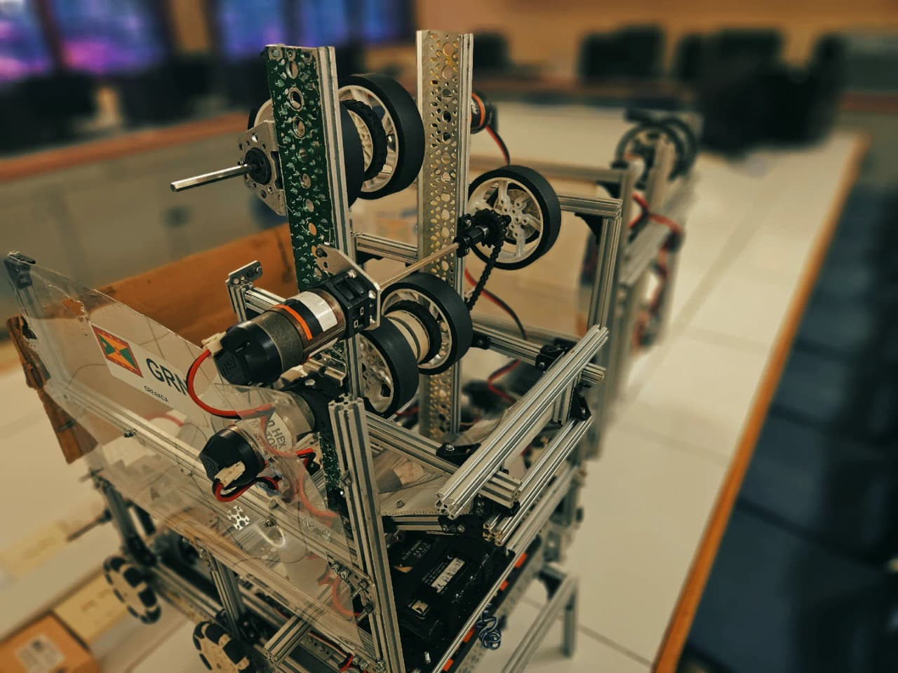
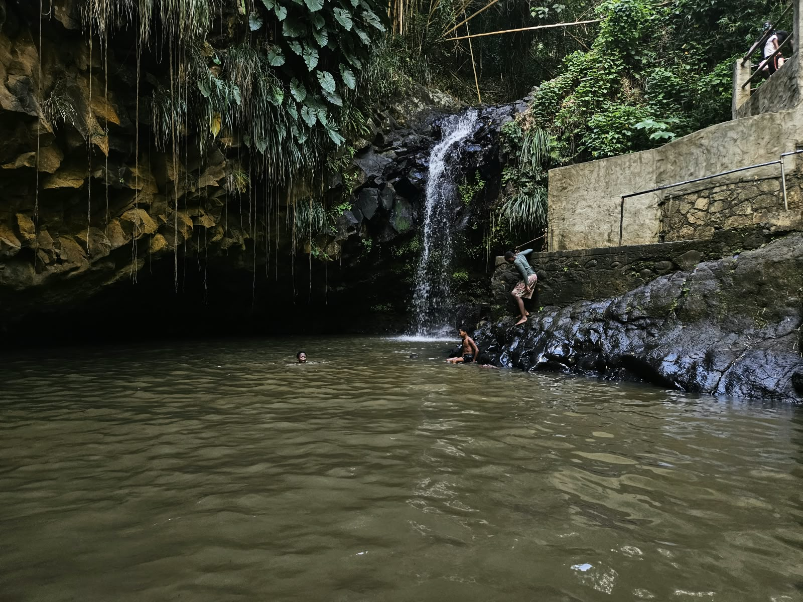

GET TO KNOW ME
About Me
My background, interests and personal journey.
Who Am I?
My name is Keroni Frederick. I am from Grenada and I have a passion for learning, creativity and technology.
I enjoy exploring how technology works, especially robotics and programming. Being involved in robotics has allowed me to develop teamwork, communication, creativity and problem-solving skills.
Outside of technology, I enjoy basketball, cooking and photography. Each of these interests allows me to develop different skills and express myself.
WHAT I ENJOY
My Interests & Hobbies

Basketball
I enjoy basketball because it encourages teamwork, discipline and determination.

Cooking
Cooking allows me to be creative, experiment with food and learn new skills.

Robotics
I enjoy robotics because it combines programming, engineering and innovation.

Photography
Photography allows me to capture moments and express creativity through images.